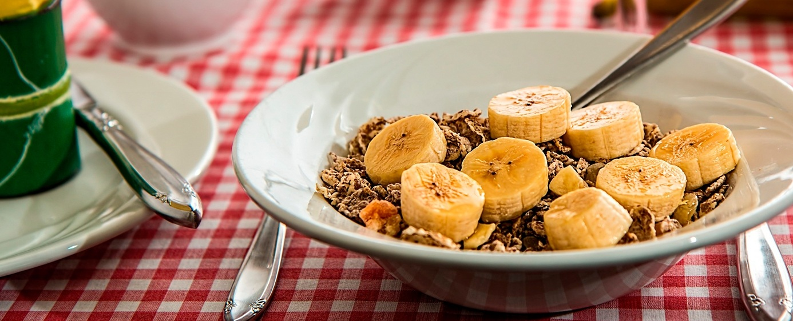
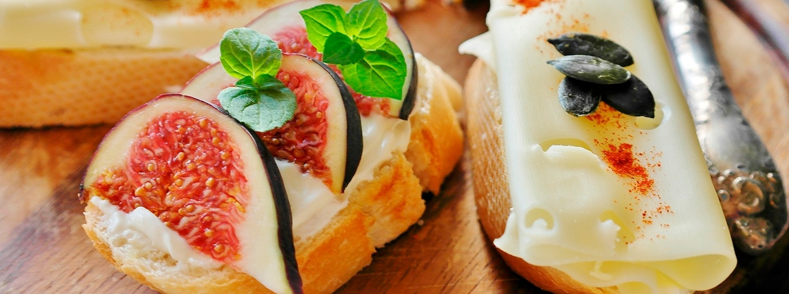

Populárne články

Stručný sprievodca intuitívnym stravovaním
Intuitívne stravovanie je filozofia stravovania, vďaka ktorej sa stávate odborníkom na svoje vlastné telo a jeho signály hladu. V podstate ide o pravý opak tradičnej diéty. Nestanovuje žiadne pravidlá o tom, čomu sa vyhýbať, čo jesť alebo kedy jesť. Namiesto toho vás učí, že práve vy ste tým najlepším – a vlastne jediným – človekom, ktorý môže o týchto veciach rozhodovať. Tento článok je podrobným sprievodcom intuitívnym stravovaním určeným pre začiatočníkov.

Základy
Intuitívne stravovanie je spôsob stravovania, ktorý podporuje zdravý vzťah k jedlu a vnímaniu vlastného tela. Jeho podstata spočíva v tom, že jete, keď ste hladní, a prestávate jesť, keď ste sýti. Hoci by to mal byť prirodzený a intuitívny proces, pre mnohých ľudí to tak nie je. Spoliehanie sa na diétne príručky či takzvaných odborníkov v otázkach toho, čo, kedy a ako jesť, vás môže odviesť od dôvery vo vlastné telo a jeho intuíciu. Ak chcete jesť intuitívne, možno sa budete musieť znova naučiť dôverovať svojmu telu. K tomu je potrebné rozlišovať medzi fyzickým a emocionálnym hladom:
Fyzický hlad. Tento biologický pud vám hovorí, že treba doplniť živiny. Vzniká postupne a prejavuje sa rôznymi signálmi, ako sú škvŕkanie v žalúdku, únava či podráždenosť. Utiší sa, keď zjete akékoľvek jedlo.
Emocionálny hlad. Je poháňaný emocionálnou potrebou. Smútok, osamelosť a nuda patria medzi pocity, ktoré môžu vyvolať túžbu po jedle – často po takzvanom „utešujúcom“ jedle. Následné jedenie potom vyvoláva pocity viny a nenávisť voči sebe samému.
10 kľúčových zásad
Vo svojej knihe o intuitívnom stravovaní Triboleová a Reschová predstavujú 10 základných princípov tejto filozofie.
1. Odmietnite diétne zmýšľanie
Mentalita diét je predstava, že existuje diéta, ktorá bude pre vás fungovať. Intuitívne stravovanie je pravým opakom diét.
2. Rešpektuj svoj hlad
Hlad nie je váš nepriateľ. Na skoré prejavy hladu reagujte tým, že telu dodáte potravu. Ak dopustíte, aby ste pocítili príliš silný hlad, je pravdepodobné, že sa prejete.
3. Uzavrite mier s jedlom
Uzavrite prímerie vo vojne s jedlom. Zbavte sa predstáv o tom, čo by ste mali alebo nemali jesť.
4. Postavte sa proti „potravinovej polícii“
Jedlo nie je dobré ani zlé a vy nie ste dobrí ani zlí na základe toho, čo jete alebo nejete. Spochybňujte myšlienky, ktoré vám tvrdia opak.
5. Rešpektuj svoj pocit sýtosti
Tak ako vám telo dáva najavo, kedy ste hladní, upozorní vás aj na to, kedy ste sýti. Všímajte si signály príjemného nasýtenia – chvíľu, keď cítite, že už máte dosť. Počas jedenia sa na chvíľu zastavte a zamyslite sa: ako vám jedlo chutí a do akej miery pociťujete hlad alebo sýtosť?
6. Objavte faktor spokojnosti
Urobte si z jedenia príjemný zážitok. Doprajte si jedlo, ktoré vám chutí. Pri jedle sa posaďte. Keď premeníte stravovanie na príjemnú záležitosť, možno zistíte, že na zasýtenie vám stačí menej jedla.
7. Rešpektujte svoje pocity bez toho, aby ste siahli po jedle
Emocionálne jedenie je stratégia na zvládanie pocitov. Nájdite si spôsoby, ako so svojimi pocitmi narábať bez toho, aby ste siahali po jedle – napríklad choďte na prechádzku, meditujte, píšte si denník alebo zavolajte priateľovi. Uvedomte si situácie, keď pocit, ktorý by ste mohli označiť za hlad, v skutočnosti pramení z emócií.
8. Rešpektuj svoje telo
Namiesto toho, aby ste kritizovali svoje telo za to, ako vyzerá a čo na ňom podľa vás nie je v poriadku, vnímajte ho ako schopné a krásne – presne také, aké je.
9. Cvičte — pocíťte rozdiel
Nájdite si také spôsoby pohybu, ktoré vás bavia. Presuňte pozornosť z chudnutia na pocit energie, sily a životnej vitality.
10. Dbajte o svoje zdravie – šetrná výživa
Jedlo, ktoré konzumujete, by malo dobre chutiť a mali by ste sa po ňom cítiť dobre. Pamätajte, že vaše zdravie formujú celkové stravovacie návyky. Jedno jedlo či desiata vaše zdravie ani nezničia, ani nezachránia.
Prínosy podložené výskumom
Výskum na túto tému stále rastie a zameriava sa prevažne na ženy. Doterajšie štúdie spájajú intuitívne stravovanie so zdravšími psychologickými postojmi, nižším indexom telesnej hmotnosti (BMI) a udržiavaním hmotnosti – hoci nie s úbytkom hmotnosti. Jednou z hlavných výhod intuitívneho stravovania je lepšie psychické zdravie. Účastníci štúdií intuitívneho stravovania si zlepšili sebavedomie, vnímanie tela a celkovú kvalitu života a zároveň pociťovali menej depresií a úzkostí. Intervencie intuitívneho stravovania majú tiež dobrú mieru udržania si, čo znamená, že ľudia s väčšou pravdepodobnosťou vytrvajú v programe a budú naďalej praktizovať zmeny správania, ako by boli pri diéte. Iné štúdie sa zamerali na stravovacie správanie a postoje žien a zistili, že tie, ktoré vykazujú viac známok intuitívneho stravovania, majú menšiu pravdepodobnosť prejavovania porúch stravovacieho správania.
ZHRNUTIE
Nové výskumy naznačujú, že intuitívne stravovanie súvisí so zdravším postojom k jedlu a k vnímaniu samého seba, a tiež že sa mu možno naučiť prostredníctvom cielených intervencií.

Ako odmerať veľkosť porcií
pomocou rúk
Prečítať článok

Vodná bilancia, význam
správnej hydratácie
Prečítať článok

Ako kúpiť tie najlepšie
nohavice na jogu
Prečítať článok

Tipy na zdravé stravovanie
s obmedzeným rozpočtom
Prečítať článok

Ako byť viac
Disciplinovaný
Prečítať článok

5 wellness trendov, ktoré si zamilujete
Uvidíme sa v roku 2019
Prečítať článok

Kokosový olej na vlasy, ktoré
Žiari
Prečítať článok